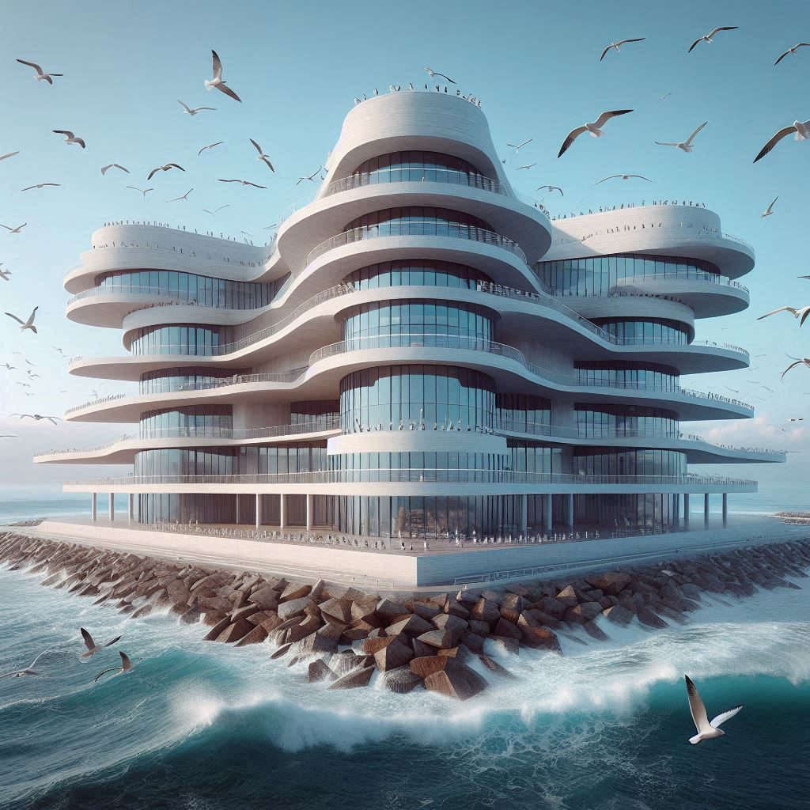

건립 이유
|
전경
|
건립 과정

1. 알바트로스의 건립 이유
부산이 지방이라는 이유로, 수도권에 비해 의료 수준이 낙후되어 있다는 고정 관념을 타파하고자 건립하게 되었다.
'알바트로스'는 '큰 바닷새'라는 뜻으로 부산을 대표하는 갈매기를 상징한다. 또한, 외견상으로 바다 위에 위치한 유선형의 흰 건축물이라는 점이 바다의 갈매기를 연상시킨다.
2. 환자들을 위한 알바트로스
모더니즘의 건축 양식으로 단조로움을 살렸으며, 바다 위에 건축되어 환자들의 심신을 안정시킨다.
3. 미래를 지향하는 알바트로스
유기적인 형, 직선의 반복, 좌우 대칭의 양식을 사용하여 미래 지향적인 느낌을 주었다.
3-1. 유기적인 형태
자연의 유선형을 반영해 부드러운 곡선을 사용하여 조화로운 미감을 강조했다.
3-2. 단순화와 최소주의
불필요한 장식을 배제하여 간결하면서도 모던한 느낌을 표현했다.
3-3. 수평적 선의 반복
가로선의 반복을 통해 안정감과 리듬감을 부여하여 시각적 연속성을 강조했다.
Javascript가 꺼져있습니다!
댓글 기능을 사용하기 위해서 Javascript를 활성화해주세요.
JavaScript is disabled.
Please enable JavaScript to use comments function.